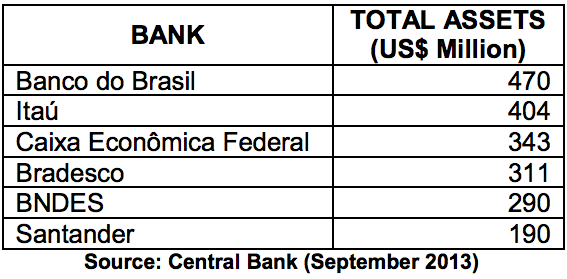

The largest in South America, Brazil’s banking system is highly developed, efficient, and offers a wide range of financial services. The nation’s financial system regulates banking and financial services as well as insurance, and maintains strict accounting and operational supervision.
Financial services in Brazil, including banking, leasing and insurance services are governed by the Brazilian Constitution, which established the National Financial System (Portuguese acronym SFN). This system, headed by Government of Brazil’s Ministry of Finance, is organized as follows:
Regulatory Agencies
National Monetary Council (CMN), an official body whose main functions are to maintain control of the medium of exchange and the circulation of money; to establish directives for exchange policy and dealings in gold; to discipline credit and the provision of guarantees; to regulate the establishment, operation and control of financial institutions; to protect the liquidity and solvency of financial institutions; and to guide the applications of resources so as to promote the orderly development of the country.
Central Bank (Banco Central do Brasil), a federal agency entrusted to execute the policies established by the CMN for the improvement and stability of the National Financial System (SFN). Its functions include control of the money supply, the physical issuance of currency, the regulation and control of financial institutions, the control of foreign capital flow, determining credit policy, managing market liquidity levels, monitoring interest and exchange rates, and maintaining savings at levels compatible with the country’s needs.
Securities Exchange Commission (CVM), which directly regulates the stock exchanges, brokers, distributors, pension funds, mutual funds and leasing companies.
National Council of Private Insurance (CNSP), comprised of the Ministry of Finance, the Superintendence of Private Insurance (SUSEP), the Brazilian Reinsurance Institute (IRB), the Central Bank, representatives of the Ministries of Justice and Planning, and four private insurance companies. The CNSP’s responsibilities include setting insurance policy guidelines and rules; regulating private insurance firm creation, organization, activities and supervision; establishing guidelines of insurance contracts; establishing reinsurance rules; and keeping general accounting and statistical records.
Superintendence of Private Insurance (SUSEP), an independent agency subject to the Ministry of Finance via the CNSP. It monitors the insurance and private pension market through the solvency index; establishes operational risk limits; supervises technical reserves; and regulates open pension funds and insurance brokers.
Classification of Institutions under SFN Governance
Financial Institutions, Banking and Non-Banking
Banking: multiple banks, commercial banks, saving & loan banks, cooperative banks, credit cooperatives
Non-Banking: investment banks, development banks, finance companies, saving & loan companies, mortgage companies
Ancillary Institutions
Security dealers
Stockbrokers
Other entities not considered financial institutions, yet subject to CMN and Central Bank supervision
Insurance and capitalization companies and private pension funds
Brazil’s Largest Banks Ranked by Assets, Public and Private
Growth results in 2013 by Brazilian banks show the country’s two private banks, Bradesco and Itaú, among the most profitable in Latin America.

Banco do Brasil, Caixa Econômica Federal (Federal Savings Bank), and BNDES, the National Bank for Economic and Social Development are owned by the federal government. Itaú and Bradesco are Brazilian-owned private banks. Santander is Spanish-owned.
Market Trends
According to a survey held by the Brazilian Bank Federation (Febraban), the banking industry is not too optimistic about 2014. Projections indicate that growth of credit operations will remain steady. For individuals, a 10% growth rate is expected, while total portfolios are expected to grow at a rate of 12%.
U.S. Participation
U.S. commercial and investment banking interests have been in Brazil since 1915. In terms of assets, Citibank and JP Morgan were among the top 50 institutions in the country as of December 2013. At that time, the banks held assets of, respectively, US$26.4 and US$14 billion.
Web Resources